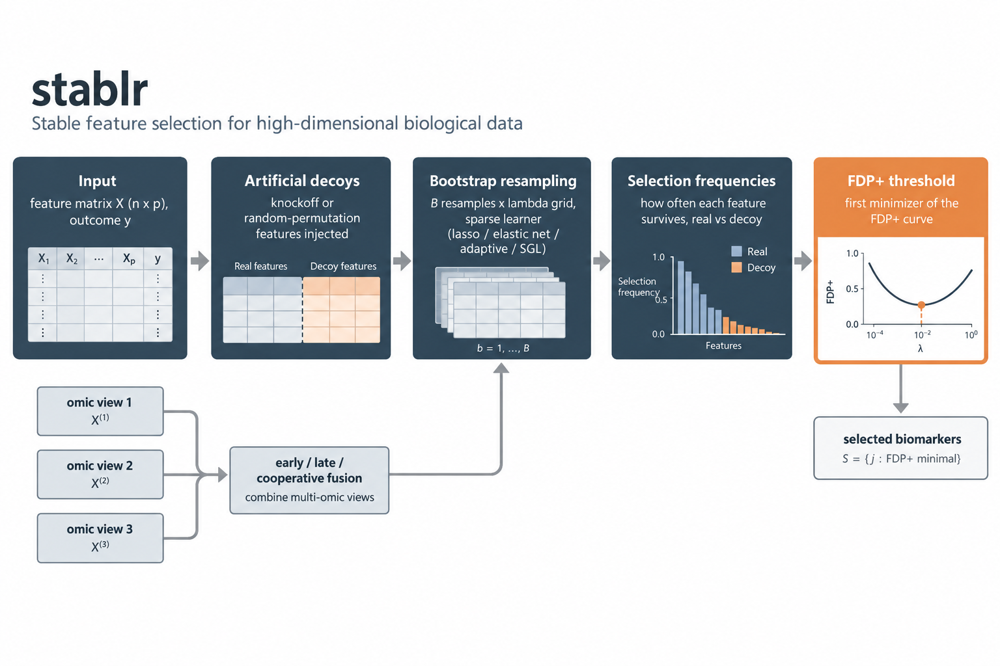

R-native STABL: sparse, stable biomarker selection with false-discovery calibration
The stablr package implements STABL (Stability-based Thresholding and Aggregation for Biomarker discovery via LASSO) for high-dimensional clinical and omic data. The method repeats three steps. It resamples the data. It fits a sparse learner across a penalty grid. It records how often each feature is selected. It then calibrates these selection frequencies against artificial decoy features. The package keeps the parity-critical STABL semantics of the Python implementation. It exposes R-native S3 objects, glmnet-ecosystem learners, multi-omic workflows, visualization helpers, and CSV/disk export utilities. It compiles C++ but has no Python or tidymodels runtime dependency.
Major functionality of stablr:
-
stabl()Simple selector: a data.frame in, a plain-language selection out -
stabl_fit()Expert interface: full control of lambda grid, bootstrap design, thresholds, and learners -
compute_fdp_plus()FDP+ thresholding with random-permutation and knockoff artificial features -
stabl_multiomic_train_validate()Multi-omic train/validation with early, late, and cooperative fusion -
stabl_multiomic_nested_cv()Outer CV with sample-i.i.d., grouped, or study-disjoint folds -
stabl_multiomic_scheme_comparison()Compare CV schemes arm-by-arm on held-out error -
stabl_environment_stability()Transportable selections across environments (experimental) -
jaccard_similarity_matrix()Selection-reproducibility metrics
Resources
- Hédou, J., Marić, I., Bellan, G. et al. Discovery of sparse, reliable omic biomarkers with Stabl. Nat Biotechnol (2024). doi:10.1038/s41587-023-02033-x
- Ding, Y. D., Li, S., Narasimhan, B., Tibshirani, R. J. Cooperative learning for multi-view analysis. PNAS (2022). doi:10.1073/pnas.2202113119
-
Documentation website and the Vignettes menu above for executable tutorials — including Python STABL parity (what the pinned Python-reference fixtures do and do not establish), Reading stability paths and FDP+ plots, and Reliability diagnostics, validation, and final models (the
stabl_diagnose()/stabl_null_check()/stabl_replication_profile()/stabl_finalize()toolchain) - Release governance and review status
- Reproduction compendium: the aging case study end to end — raw atlas download (MD5-pinned), donor-table derivation, v1 showcase and v2 benchmark pipelines, committed results, and bit-for-bit verification evidence — bundling the pinned package source as a git submodule
Motivation
A high-dimensional biomarker screen begins with an uncomfortable fact: there are many more tempting variables than there are samples. A sparse model can still choose a short list. But a single fit does not tell whether the list is sturdy or merely lucky. A selection that reproduces only inside its own sampling scheme has little value for a new cohort or a new lab.
STABL turns the one-shot question into a repeated experiment. Bootstrap resampling paired with artificial decoy features converts selection frequency into a calibrated decision. A feature is retained only when it out-competes decoys that carry no signal. The fitted threshold is the first minimizer of the observed FDP+ diagnostic curve. stablr extends the same discipline across omic views (early, late, and cooperative fusion) and across environments and studies (grouped and study-disjoint resampling), so that reliability and transportability are measured rather than assumed.
stablr workflow

Analysis modes
stabl_analyze() makes the evidence level explicit via a required mode argument. mode = "exploratory" fits STABL on the full data and returns a canonical interpretation table (stabl_interpret()) labelled post_selection_descriptive — coefficients, stability, effect directions, and correlation groups describe the fitting data and are not predictive evidence. mode = "validated" runs nested cross-validation with fold-fitted preprocessing (stabl_preprocess_fit() / stabl_preprocess_apply()) and returns held-out predictions, pooled and per-repeat performance, and held-out permutation importance labelled cross_validated. Binary outcomes report accuracy, balanced error rate, macro-F1, MCC, Brier, log-loss, and AUROC; gaussian outcomes report MAE, RMSE, and R² (with explicit definitions — negative R² is retained, and an empty selection falls back to a deterministic intercept-only model). A validated analysis with final_refit = TRUE can be packed into a portable final model with stabl_finalize() and applied to new data with predict().
Evidence status (simulation-only, predeclared gates, benchmarks/iv_summary.md): effect-direction recovery 1.00; null validated AUROC centred at chance (median 0.473); leaky full-data selection is directionally optimistic over nested validation (+0.015 mean AUROC); one-feature folds produce non-degenerate probabilities. One predeclared criterion was NOT met: correlated substitutes are always assigned to a single correlation group when co-selected, but FDP+ selection retains all members of a correlated block in only 60% of runs — do not expect complete co-selection of redundant features. Multiclass and ordinal graduation remain reserved (WS-9 ordinal graduation NOT met).
Technical intro
stablr is R-native without a Python runtime. The core STABL method is parity-tested against the Python STABL implementation (Hédou et al. 2024); cross-language solver validation uses ranking/support contracts and does not claim bit-identical coefficients. The cooperative-learning backend is compiled C++17 (vendored multiview engine), and learners come from the glmnet ecosystem: lasso, elastic net, adaptive lasso, and optional sparse group lasso, with gaussian, binomial, multinomial, and Cox outcomes where the backend supports the family. A random-forest learner (ranger) and an ordinal-regression learner (ordinalNet) are also available as base learners.
The interface is two-tier. stabl() runs STABL with statistically safe defaults — model-X knockoff artificial features, FDP+ calibration, strict fallback, automatic lambda grid — and prints a plain-language answer:
library(stablr)
fit <- stabl(df, y = "response", n_bootstraps = 1000L, random_state = 42L)
fit # plain-language answer
get_feature_names(fit) # the selected features
plot(fit) # stability paths + FDP+ curvestabl_fit() exposes every argument — lambda grids, bootstrap design, thresholds, learner adapters, sample grouping — and every accessor and workflow applies to both objects. See ?stabl_fit and the vignettes.
Everything beyond core STABL is labelled as an extension. Cooperative fusion (Ding et al. 2022) ships on the vendored multiview engine for gaussian and binomial families (Cox deferred). The random-forest learner is calibrated for scoped settings: linear and nonlinear gaussian problems with up to a few dozen predictors (base_learner = "rf"). The ordinal learner is experimental pending its calibration study (base_learner = "ordinal"). The environment-stability workflow aggregates per-environment selections by their minimum frequency; it is calibrated for small feature panels (see ?stabl_environment_stability).
Interpretation limits are part of the contract. The fitted threshold is the first minimizer of the observed FDP+ curve; a plotted fdr_target is a visual reference, not a fitting target, and neither is a universal false-discovery guarantee. Knockoff modes fail closed above 3,000 predictors because a globally valid chunked construction has not been established; random-permutation controls remain available at larger dimensions.
Install
stablr compiles a C++17 native cooperative-learning backend at install time. You need a C++17-capable compiler toolchain:
- Windows: Rtools (Rtools42 or later)
-
macOS: Xcode Command Line Tools (
xcode-select --install) -
Linux: GCC ≥ 7 or Clang ≥ 5 (usually pre-installed; install via
apt install r-base-devor equivalent)
Install
# Install from GitHub
remotes::install_github("mdmanurung/stablr")
# Or from a local clone, from the repository root:
devtools::install_local(".")Dependencies
Optional functionality uses optional packages, in case these aren’t installed automatically:
install.packages(c("ggplot2", "knockoff", "future", "furrr", "sparsegl"))-
ggplot2: plotting helpers and saved result figures -
knockoff:artificial_type = "knockoff","knockoff_equi", or"knockoff_mvr" -
future,furrr: parallel bootstrap execution -
sparsegl:base_learner = "sparse_group_lasso" -
mixOmics: TCGA vignette dataset